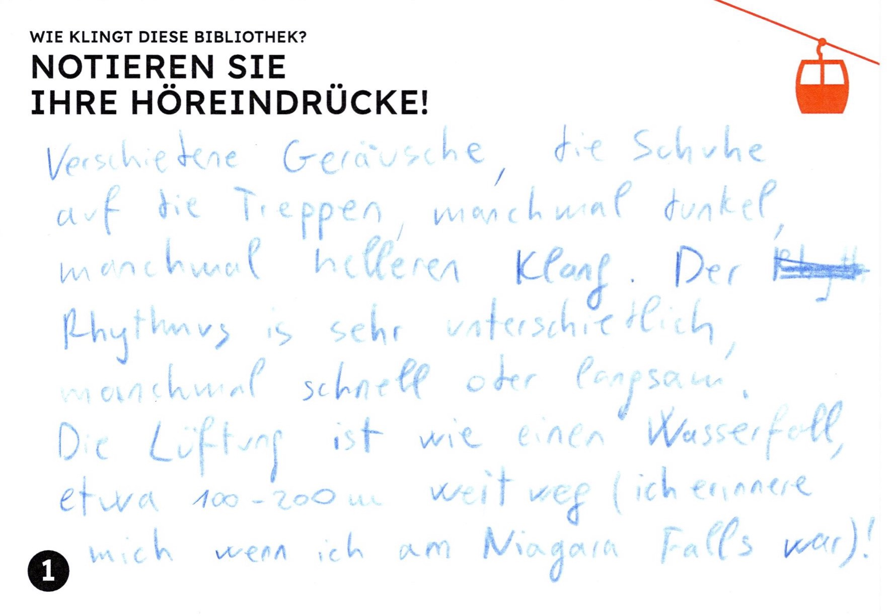
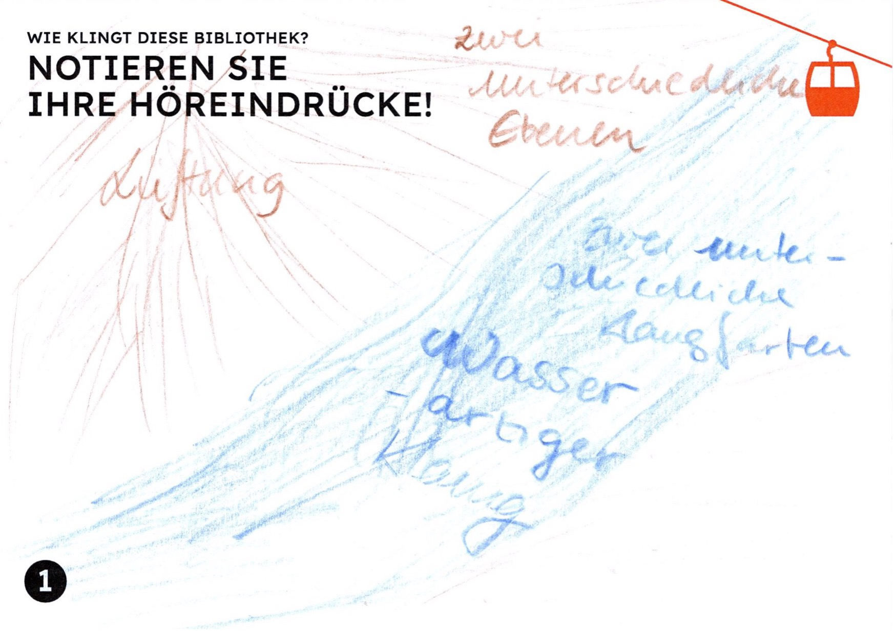
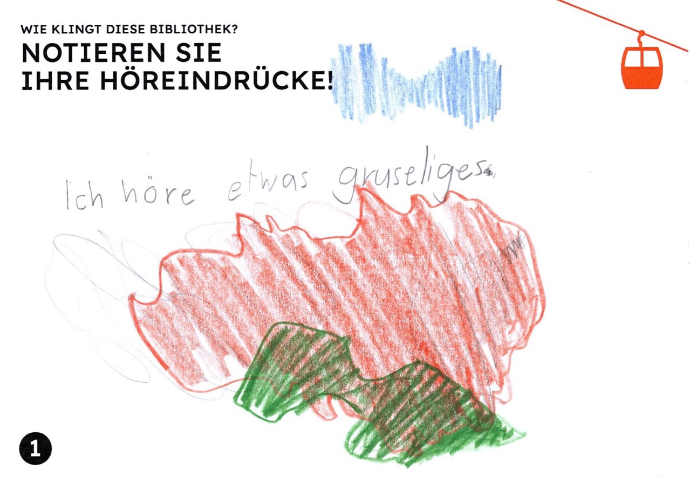
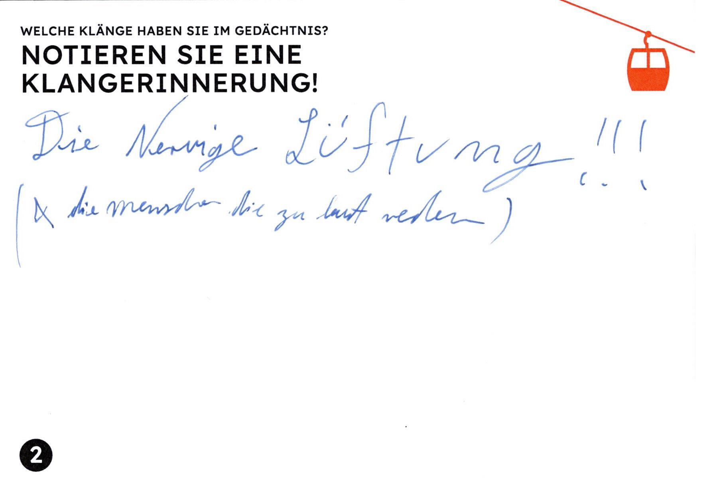
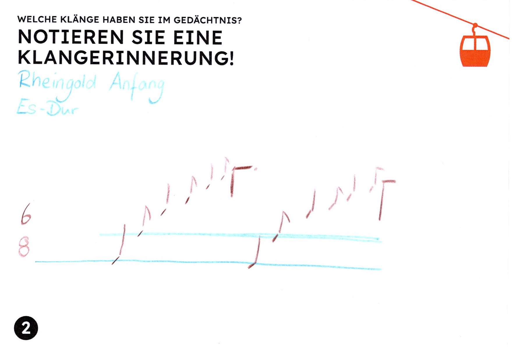
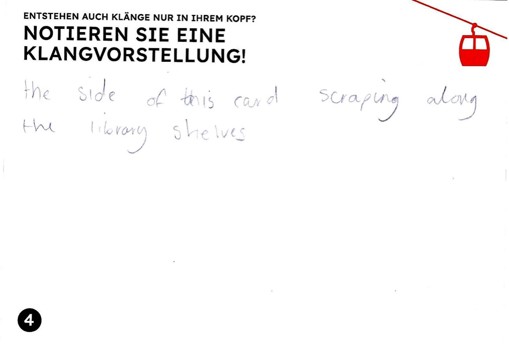

Die Bibliothek von Babel, beschrieben von Jorge Luis Borges, ist ein stiller Ort. Jedenfalls widmet sich die gleichnamige Erzählung nur ihrer visuellen Erscheinung: Selbst Bücherverbrennungen und Selbstmorde, die sich laut Borges in diesem papierenen Universum ereignen, scheinen lautlos zu geschehen. Zwar wird behauptet, dass diese unendliche Bibliothek alle kombinatorisch möglichen Bücher enthalte, doch die Erzählung verweist vor allem auf sich selbst, auf fiktionale Literatur und Literaturwissenschaft. Bücher über Musik finden z. B. keine Erwähnung – vielleicht weil sie sich nicht einfach einreihen lassen als weitere fantastische Konstellation von 25 Schriftzeichen, sondern ebenso Notenbeispiele, ergänzende Tonträger und Porträts von ernst blickenden Komponisten erfordern.
Die Bibliothek von Basel, die Vera Oeri Bibliothek der Musik-Akademie
Basel1, stellt als grösste
Musikaliensammlung der Schweiz also Borges’ Bibliothek spielend in den
Schatten: Dieses Universum ist wirklich unendlich, nicht als Magazin
oder Bibliothekskatalog, sondern in den unendlichen Möglichkeiten, diese
Noten, Tonträger, Datenbanken und Media-Kits zu nutzen, zu
interpretieren und mit anderen zu teilen. Mitten in der Stadt Basel ist
die Bibliothek zwar ein Raum der Stille, doch gefüllt mit Musik und
nicht ruhig: In der Musikbox
spielen Kinder Musikspiele, im
Co-Working-Space werden Musikvermittlungsprojekte diskutiert oder
Eigenkompositionen in eine Notationssoftware getippt und Musik aus allen
Zeiten wird im Kopierraum geräuschvoll durch die Maschine gezogen, um
sie an einem anderen Ort zu spielen, aber auch im Lesesaal zu studieren,
also sich innerlich vorzustellen.
Wenn man alle Klänge und Ohrwürmer, die die Nutzer:innen der Vera
Oeri Bibliothek im Kopf mit sich tragen, hörbar machen könnte, das
ergäbe nicht was Borges in seiner Bibliothek als Meilen sinnloser
Kakophonien
beschreibt, sondern eine polyphone, klangräumlich
differenzierte Mehrchörigkeit, wie sie Wim Wenders in der berühmten
Bibliotheksszene von Der Himmel über Berlin (1987)2 als Soundwalk inszeniert:
In der spektakulären Architektur der Berliner Stabi präsentiert sich der
Klang zwar als ephemer und flüchtig, doch gerade deshalb formbar in Zeit
und Raum, performativ und metamorph.
Nun ist die Hochschule für Musik Basel, unter dem selben Dach wie die
Vera Oeri Bibliothek, tatsächlich im Besitz einer potenziell unendlichen
Klangbibliothek: Seit 2020 zeichnet der Schweizer Komponist und
Musikforscher Michel Roth Eigenschwingungen von Seilbahnseilen in den
Urner Alpen auf. Diese so genannten Singenden Seile
treten vor
allem auf, wenn die Bahn nicht fährt; die Einheimischen beobachten das
Phänomen über Stunden und Tage, nachts stört es sie manchmal, doch es
bedeutet auch etwas Vertrautes und Heimatliches und begleitet sie durch
die Jahreszeiten. Bergbauern nutzen das Singen zur lokalen
Wettervorhersage. Roths Tonarchiv3 umfasst bereits Hunderte
von Aufnahmen, wobei er ein Gerät entwickelt hat, das Seilklänge auch
live streamen und damit endlos aufzeichnen lässt4.
Dieser Klangbibliothek und dem zugehörigen Forschungsprojekt hat die Vera Oeri Bibliothek im März 2024 eine Ausstellung mit Begleitprogramm5 gewidmet, die unter dem Titel Singende Seile. Klingende Stadt auch den Transfer in die akustische Ökologie des urbanen Raums thematisiert: Welche Klänge prägen unseren Alltag in der Stadt, welche beobachten wir, geben uns Identität und Orientierung oder deuten auf Veränderungen unserer Umwelt hin beziehungsweise werden als störend empfunden?
Nebst live gestreamten Klängen aus den Alpen und Zugriff auf Michel Roths digitale Klangbibliothek verwandelte sich die Vera Oeri Bibliothek in eine Klangseilbahn: Szenografisch geführt von im Raum verspannten orangen Seilen konnte man über vier Stationen und Etagen (entlang der vier Hörachsen der amerikanischen Komponistin Pauline Oliveros) den Klangraum der Bibliothek erkunden.
Das Publikum wurde mit Postkarten zu eigenen Hörexperimenten angeleitet, zum Beispiel:
Die Besuchenden wurden gebeten, den Klang der Bibliothek auf bereitgelegten Postkarten zu beschreiben:



Das Publikum konnte auf diesen Postkarten auch eigene Hörerinnerungen festhalten, wobei einige Beiträge ebenfalls die Musikbibliothek thematisierten:


Die mehrfach erwähnte Lüftung der Bibliothek, die sowohl positiv
(Wasserfall
) als auch negativ (nervig
) konnotiert wurde,
wurde mit Roths Forschungsmethode in die Ausstellung integriert, indem
nebst dem Singen
von zwei Seilbahnen auch das Rauschen eines
Lüftungsrohrs der Bibliothek über Hunderte von Stunden live gestreamt
wurde.
Und schliesslich durften innere Klangvorstellungen oder kreative Klangideen auf Postkarten festgehalten werden – was wiederum einige Besuchende direkt auf die Bibliothek und ihre Infrastruktur bezogen haben:

Über die Ausstellungsdauer akkumulierten sich so auf den Magnettafeln etwa 90 Beiträge von Besucher:innen der Ausstellung oder zufällig anwesenden Nutzer:innen der Bibliothek.
Ein wichtiger Bestandteil des Projekts waren konzentrierte akustische Interventionen in die akustische Ökologie der Bibliothek: Eine immersive Klanginstallation übertrug fühl- und hörbar Seilbahnschwingungen auf die Metallstreben des Bibliotheksfoyers, der Ruheraum der Bibliothek wurde an einem Tag mit wellenartigen Schwingungen des Seils einer Basler Rheinfähre geflutet, in den Rollschränken wurden kleine Lautsprecher mit kaum hörbaren elektronischen Summtönen versteckt, im Ausstellungsverlauf wurden mehrere Performances oder performative Führungen in der Bibliothek veranstaltet (siehe oben die erste Abbildung dieses Beitrags).
Und wie klingt eine Bibliothek mit 18 lebhaften Kindern? Wie kann man diesen Kindern zwischen neun und zwölf Jahren vermitteln, dass nicht nur Melodie und Rhythmus schöne Klänge sind, sondern auch alltägliche Geräusche, die wir vielleicht gar nicht beachten, zu Musik werden können? Als Teil der Ausstellung Singende Seile. Klingende Stadt fand ein mehrteiliger Workshop mit einer ukrainischen Schulklasse statt, geleitet von der Sängerin und Musikvermittlerin Felicitas Erb zusammen mit den Musikstudentinnen Oleksandra Katsalap und Anna Alexay und der ukrainisch-schweizerischen Lehrerin Yelizaveta Kozlova.
Die Schüler:innen, die teilweise erst seit Kriegsausbruch in der
Schweiz wohnen, wurden zunächst durch Hör-Spiele
sensibilisiert
für die alltäglichen Klänge ihrer Umgebung. Viele Experimente
entstammten didaktischen Medien aus dem Bestand der Vera Oeri
Bibliothek. Dann haben die Kinder ein Hörtagebuch geführt, in dem sie
einen Tag lang alles Gehörte aufgeschrieben haben. Ein Kind schrieb:
Das höre ich am Morgen: Stille. Dann ruft meine Mutter:
Steh auf!
Dann höre ich das leise Knistern meines Hochbettes, wenn ich
herunterstieg. Den Wasserhahn. Die Schritte von meinen Füssen… und so
weiter…
Auch die Bibliothek und die Ausstellung Singende Seile. Klingende
Stadt wurde von den Kindern klanglich erkundet. Dazu brachte Michel
Roth spezielle Flummibälle mit, mit denen er gelegentlich Seilbahnen
künstlich zum Singen
bringen kann. Als Klangobjekte dienten den
Kindern aber nun die Metallregale, Fensterscheiben und Holzoberflächen
der Bibliothek – der ganze Raum wurde zum vibrierenden Resonanzkörper.
Doch selbst als die Kinder ruhig waren, bemerkten sie, dass es in der
Musikbibliothek keineswegs so leise ist, wie man vermuten könnte: Die
Lüftung tönte für viele wie ein rauschender Wasserfall.
Schliesslich konnten die Kinder eigene Kompositionserfahrungen sammeln. In kleinen Gruppen haben sie Hörausflüge rund um die Musik-Akademie und die Bibliothek gemacht und Klänge mit Mikrophonen aufgezeichnet: Türenschlagen, Vogelzwitschern, Wasserrauschen, jemand übt in einem Zimmer Klavier, Atmen, Kichern. Dabei haben die Kinder sehr verschieden mit ihrer Klangumgebung interagiert. Die meisten waren zum ersten Mal auf dem Campus und haben einfach die Soundscape erforscht und beobachtet. Andere haben aktiv etwas geändert, haben gesprochen und sogar Rhythmen auf Objekten gespielt. Daraus sind am Computer faszinierende Hörstücke entstanden, wie das folgende Beispiel zeigt: https://soundcloud.com/user-975110633/bohdan.
In der Abschlusspräsentation am 24. März 2024 in der Vera Oeri Bibliothek haben die Schüler:innen vor den Eltern und interessierten Zuhörer:innen aus ihren Hörtagebüchern vorgelesen und ihre Kompositionen präsentiert.
Es wurde deutlich, welche weitreichenden Auswirkungen eine verstärkte Aufmerksamkeit gegenüber alltäglichen Klängen haben kann: Eine ukrainische Lehrerin und Mutter, die die Workshops begleitete, gab nach der Aufführung die berührende Rückmeldung, dass ihr durch das Projekt aufgefallen sei, dass man auch mitten in der Stadt Basel die Vögel singen höre – wie sie es von ihrem ukrainischen Heimatort kennt.
Wir bedanken uns herzlich beim Team der Vera Oeri Bibliothek, namentlich beim Leiter Thomas Nierlin, für die engagierte Unterstützung und fachkundige Mitgestaltung dieses Projekts.
Michel Roth (https://orcid.org/0000-0002-0300-9110, https://www.fhnw.ch/de/personen/michel-roth), geboren in Altdorf (Uri), ist Komponist und Professor für Komposition, Musiktheorie und Artistic Research an der Hochschule für Musik der Musik-Akademie Basel (FHNW). Er forscht und publiziert über musikalische Anwendungen von Spieltheorie und Kybernetik (Promotion an der Universität Basel), Organologie der zeitgenössischen Musik und alpine Klangsoziologie (Singende Seile
).
Felicitas Erb ist klassische Sängerin und Musikvermittlerin, spezialisiert auf Lied- und Konzertgesang. Für ihre CD-Einspielungen erhielt sie zahlreiche Auszeichnungen, darunter eine Nominierung für den Opus Klassik als Sängerin des Jahres 2023. Als Musikvermittlerin war sie am Opernhaus Zürich tätig und arbeitet nun an ihrem Forschungsprojekt Musikvermittlung als kreativ-kritische Praxis
an der Hochschule für Musik Basel.
Anna Alexay studiert Schulmusik II C mit Hauptfach Musikwissenschaft in Basel. Im August 2023 hat sie Michel Roth bei seinem Installationsprojekt Seilsender am Alpentöne-Festival in Altdorf assistiert.
Oleksandra Katsalap ist eine ukrainische Musikerin. Sie studiert Komposition und Klavier an Hochschule für Musik Basel bei Michel Roth, Caspar Johannes Walter und Tobias Schabenberger. Ihr Hauptinteresse liegt an die Grenze zwischen Musik und Performance.
Oliver Rutz studierte Komposition und Musiktheorie an der Hochschule für Musik in Basel. Wenn er nicht in einer Musikbibliothek sitzt, interessiert er sich für gesellschaftliche Themen im urbanen und alpinen Raum. Oliver Rutz bildet sich derzeit weiter im journalistischen und publizistischen Bereich.